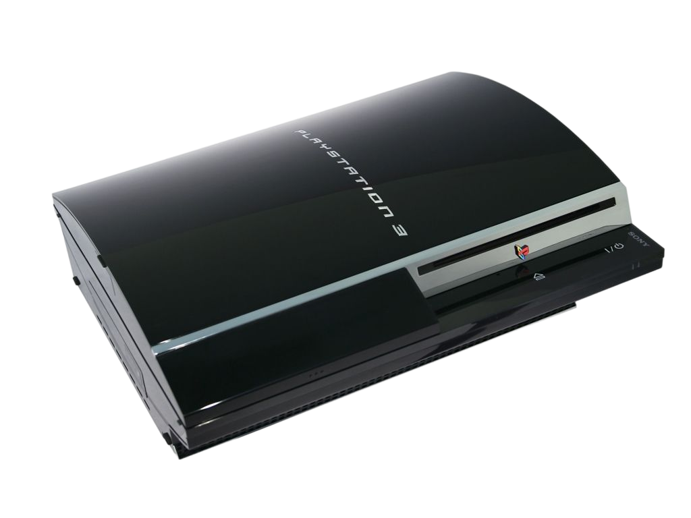

Um dos maiores e melhores consoles que já foi inventado, o PlayStation tem uma grande história, parcerias que não deram certo e muitas coisas interessantes.
A Parceria com a Nintendo
Tudo começou em 1980, quando Ken Kutaragi o criador do PlayStation, projetou o chip de som SPC-700 que podia chegar a 700 MB muito superior às outras memórias dos vídeo games da época que chegava a 6 MB. Este projeto da Sony chamou a atenção da Nintendo que resolveu fazer uma parceria com eles para bater de frente com o Mega CD da Sega e do PC Engine da NEC. Para Sony que era uma grande marca do setor eletrônico, viu uma grande oportunidade de entrar no ramo dos consoles e com isso o projeto SNES-CD foi criado.
O Fim da Parceria
A Sony e a Nintendo começaram a ter desintedimentos porque a Sony iria criar o CD-ROM que ficaria acoplado com o Nintendo e assim ficando com as taxas de licenciamento de CD's e do periférico ficaria com eles, além disso no contrato dizia que a Sony poderia criar um console alternativo chamado de NintendoPlayStation, ele rodaria jogos de CD e cartuchos.
Já a Nintendo não gostando nada dessas coisas, começou a fechar uma parceria com a Philips que era a rival da Sony, secretamente para criar um CD-ROM para eles, enquanto a Sony mostrava o projeto de CD-Rom do NES e apresentava o NintendoPlayStation na Consumer Electronics Show (CES) em 1991. Algum tempo depois, Hiroshi Yamaushi(1927-2013), presidente da Nintendo na época havia anunciado a parceria com a Philips e mesmo tendo muitas tentativas para levar o NintendoPlayStation adiante, a Sony e Nintendo acabaram com a parceria.
A Chegada do Sony PlayStation
O Sony PlayStation foi lançado no Japão no dia 3 de Dezembro de 1994, com um design considerado elegante e podendo utilizar melhor as possibilidades do CD que na época foram considerados uma grande inovação que permitia incríveis animações pudessem ser renderizadas e oferecendo uma ótima qualidade de som que eram novidade, o PlayStation vendeu muito no Japão e nos Estados Unidos em poucos meses.
O controle projetado por Teiyu Goto foi inspirado no controle do SNES, ele contava com alças para melhorar a ergonometria, além de características próprias como os botões Triângulo, Redondo(Bolinha), Quadrado e X, pois Teiyu Goto queria deixar sua marca e diferenciar de todos os outros controles que tinha Y, B, A e X.
O Quadrado representa "pedaço de papel" tendo ligações com documentos e itens que poderiam ser encontrados pelos jogadores nos jogos.
O Triângulo seria o "ponto de vista do jogador".
Os botões X e Redondo(Bolinha) seriam sim/confirmar e não/voltar.
A ideia de Teiyu Goto realemnte funcionou, porque em muitas jogos o Triângulo muda a câmera e o Quadrado pegar/resgatar itens.
O Sony PlayStation teve três versões de controle, a primeira que era vendida junto com o console, ela não tinha analógico.
As outras duas versões foram a Dual Analog e a DualShock, as duas tinham analógicos mas o controle DualShock tinha vibração de acordo com o que acontecia nos jogos. Isso era permitido por dois motores vibratórios, um causando uma sensação mais fraca e a outra oferecendo mais forte.
O Sony PlayStation vinha também com o Memory Card, onde o progresso dos jogos eram salvos. O Memory Card já havia sido criado pela Neo Geo mas o PlayStation que popularizou, o primeiro Memory Card tinha apenas 1MB, comparado aos Memory Cards de hoje em dia que chegam até 128 MB, era um espaço muito pequeno, mas era o suficiente para aproveitar grandes jogos.
Os 10 Jogos Mais Vendidos do PlayStation 1
Gran Turismo - 10.850.000 de Unidades Vendidas
Final Fantasy VII - 9.800.000 de Unidades Vendidas
Gran Turismo 2 - 9.370.000 de Unidades Vendidas
Tekken 3 - 8.300.000 de Unidades Vendidas
Harry Potter and The Philosopher's Stone - 8.000.000 de Unidades Vendidas
Tomb Raider - 7.100.000 de Unidades Vendidas
Final Fantasy VIII - 7.000.000 de Unidades Vendidas
Crash Bandicoot - 6.820.000 de Unidades Vendidas
Tomb Raider II - 6.800.000 de Unidades Vendidas
Metal Gear Solid - 6.000.000 de Unidades Vendidas
A sua produção foi até 2006 se encerrando meses antes do lançamento do PlayStation 3, o console recebeu mais de 7.918 jogos e mais de 960.01 milhões de unidades foram vendidas.
O PlayStation 1 foi o primeiro console a chegar a marca de 100 milhões de unidades vendidas, só sendo ultrapassado pelo seu sucessor.
PlayStation 2
Após o grande sucesso do PlayStation 1, a Sony anunciou em Março de 1999 o seu sucessor. Sendo mostrado na Tokyo Game Show em Setembro de 1999 tendo a data de lanaçamento confirmada para Março de 2000.
O seu diferencial era além de rodar jogos, também rodar DVD's, podendo jogar, ouvir músicas e assistir filmes. Com isso tudo, o PlayStation 2 nos dois dias após o lançamento já havia vendido mais de 980 mil unidades e em seu primeiro dia a Sony já havia faturado mais de US$ 250 milhões.
A procura era tão grande, mais tão grande que os estoques acabavam rápido sendo assim difícil de ser encontrado nas lojas.
Alguns dos grandes jogos do PlayStation 2
Grand Theft Auto: San Andreas
Gran Turismo 3
Gran Turismo 4
Grand Theft Auto: Vice City
Final Fantasy X
Grand Theft Auto III
Metal Gear Solid 2: Sons of Liberty
Final Fantasy XII
Tekken 5
Kingdom Hearts
Need For Speed
Midnight Club
Bomba Patch
God Of War
Shadow Of The Colossus
PlayStation 3

O polêmico PlayStation 3, odiado por muitos, amados por muitos também. Na sua apresentação da E3, só o valor apresentado já desagradou os fãs, seu preço de estreia era de US$ 600, sendo que Nintendo Wii era vendido a US$ 250 e o clássico Xbox 360 por US$ 400. Cheio de problemas e a temida luz amarela que acontecia mais na versão "Fat".
Mas o PlayStation 3 teve muitas novidades como o serviço PlayStation Plus, que é uma assinatura que a cada mês te dá três novos jogos o que foi muito bom para época.
No início não precisava ter a Plus para jogar online mas depois de um tempo virou necessário, já que muitos jogos tinham o Modo Online.
O PlayStation 3 teve muitos jogos grandes, principalmente o Grand Theft Auto V que foi um dos principais jogos do console, mas também tinha Metal Gear Solid 4, Journey, InFamous e outros.
Nele também foi colocado o Sistemas de Troféus, que tinham a Platina, Ouro, Prata e Bronze.
Para conquistar o troféu de Platina tinha que conquistar todos os troféus colocados pelos criadores dos jogos, algo que revolucionou bastante o PlayStation 3, já que no Xbox 360 tinha um sistema bem parecido que eram as Conquistas, só que não tinha a Platina quando o jogador pegava todas.
Alguns dos grandes jogos do PlayStation 3
Grand Theft Auto V
Gran Turismo V e VI
Uncharted 3 e 2
Batman: Arkham City
God Of War III
Minecraft
Tekken 6
The Last of Us
PlayStation 4
O PlayStation 4 foi lançado em 15 de Novembro em 2013 com a missão de recuperar a liderança absoluta da Sony no mercado de vídeo games após os erros que o PlayStation 3 teve, mas no começo de sua jornada já apresentava alguns problemas.
Quando chegou ao Brasil no dia 29 de Novembro de 2013, ele veio com um preço muito alto, ele chegou por R$ 4000 o que fez que muitas pessoas dessem alguns longos passos para trás e dar uma visão maior para o Xbox One que era muito mais barato e no mundo todo muitas pessoas ficaram decepcionadas por que ainda não tinham tantos títulos de peso.
O PlayStation 4 também tinha uma novidade, o controle. O DualShock 4 chamava atenção pelo seu touchpad, ela podia ser pressionada e servia recursos para muitos jogos, como trocar a câmera de visão do Grand Theft Auto V e também o seu LED que também realizava alguns recursos em jogos como: quando mudamos de personagem no Grand Theft Auto V a cor do LED mudava para a cor do personagem tipo, mudava paa o Franklin a luz do LED ficava verde, mudava para o Trevor a luz do Led ficava vermelho, mudava para o Michael a luz do LED ficava azul. Também tinha o botão Share que registrava uma foto ou vídeos para serem compartilhados nas redes sociais ou salvar na memória.
Alguns dos grandes jogos do PlayStation 4
God Of War (2018)
The Last Of Us Part II (Game Of The Year)
The Last Of Us Remastered
The Witcher 3: Wild Hunt
Horizon Zero Dawn
Grand Theft Auto V
Ghost Of Tsushima
FIFA 19 ao 23
Gran Turismo Sport
Uncharted 4: A Thief's End
Marvel's Spider Man (Game Of The Year)
Marvel's Spider Man: Miles Morales
Ratchet & Clank
Resident Evil 7 biohazard
PlayStation 5
Enfim PlayStation 5, recem lançado no dia 12 de Novembro de 2020, considerado como o PlayStation mais bonito, ele veio em duas versões Padrão e Digital, a diferença das duas é que a Digital não vinha com o leitor de disco, só podia jogar com os jogos comprados ou baixados na PlayStation Store, sendo um console muito potente podendo dar experiências incríveis em jogos de alta resolução, nele também tinha a retrocompatibilidade, que podia jogar jogos de mídia física do PlayStation 4 no PlayStation 5 o que agradou muito as pessoas pois, nos outros consoles como o Xbox One já tinha a retrocompatibilidade.
O DualSense era o novo controle do PlayStation 5 que foi considerado como uma das maiores inovações da nova geração de consoles, a pessoa podia sentir cada vibração, cada sensação do jogo se sentindo dentro dele, no controle também vinha um microfone permitindo que as pessoas pudessem se comunicar nos jogos online.
Em pouco tempo, o PlayStation 5 foi um recorde de vendas mesmo vindo com um preço muito alto, com muitas pessoas buscando e interessadas pelo vídeo game, ele ultrapassou os 2,1 milhões de unidades vendidas do PlayStation 4 na sua época de lançamento em duas semanas, já colocando então o console na história.
No PlayStation 5 vinha o PS Plus Collection... mas o que é isso?
O PS Plus Collection é meio que um "upgrade" do PS Plus, quem tivesse o PlayStation 5 e tivesse a assinatura da PS Plus, teria uma grande lista de jogos além dos três jogos mensais sem cobrar qualquer preço adicional.
Esses são os jogos da PlayStation Plus Collection:
Bloodborne
Days Gone
Detroit: Become Human
God of War
Infamous Second Son
Ratchet and Clank
The Last Guardian
The Last of Us Remastered
Until Dawn
Uncharted 4: A Thief’s End
Batman: Arkham Knight
Battlefield 1
Call of Duty: Black Ops III - Zombies Chronicles Edition


.png)